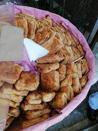

How to make Volovanes

Before getting into the recipe here is a brief history of the volovanes. The volovanes are a flaky bread that is stuffed with various ingredients.This dish dates back to the 19th century and it was originally created by the French cook and baker MArie Antonie Carem. He was a main cook that made dishes for kings, emperors and tsars, Careme was the special cook for Napoleon I. The stories go that Careme decided to use flaky pastry to make a dish and created them; one of the assistants saw this and used the expression " vol au vent" once he saw that the dish was bloating up so fast. It was later brought to the shores of Mexico in the French Intervention, where the recipe was altered and in Veracruz this snack started to get stuffed with chorizo, ham, tuna and others.
Ingredients
For the stuffing
- 2 cans of Tuna
- 250 Grams of Shrimp
- 1 Diced Onion
- 2 Teaspoons of Parsley
- 1 Cup of Tomato Puree
- 1 Pinch of Ground Pepper
- 1 Pinch of Diced Oregano
- Olive Oil
For the base
- 3 Egg Yolks for glaze
- 500 grams of Flaky Pastry
- 1 Tablespoon of Butter
- 1 Tablespoon of Flour
Instructions
- Extend the flaky pastry with a roller and cut it in squares of 10cm by 10cm.
- To make the stuffing sautee the onion and the garlic in a pan. Once it is starting to fry add the shrimp, tuna and parsley and mix well. Once the shrimp is almost done cooking add the tomato puree, oregano and black pepper. Remove from fire once it starts boiling to cool down.
- Once it has cooled down fill the squares with the food in the middle leaving all borders free. Repeat the process until all of them are done and start closing them by folding them in half.(It is entirely optional in which way to fold, make triangles or rectangles). Seal the volovanes with your fingertips and then coat them with egg yolk
- (Preheat the oven at 250 Celsius)
- Spread a layer of butter and flour on the tray and then put inside oven and bake for 25-30minutes.
- Once they are ready remove from the tray with an spatula and BE CAREFUL, THEY ARE HOT. They are ready to be served.
HOME